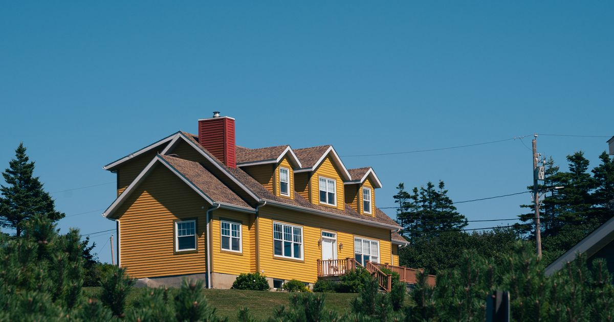

A practical guide for country homeowners
Can You Get a Reverse Mortgage on a Rural Home in Ontario?
Quick answer: Yes, some rural homes in Ontario can qualify for a reverse mortgage. Start with your address and ask which property types the lender accepts. If you live on acreage or in cottage country, check how the lender would treat your land and home before paying for an appraisal.
Maybe your home is just outside town, on a road you help maintain, or on land your family has owned for years. If you are 55 or older and want to use some of your equity without selling, here is what to check first.

Start with your address, not your estimate
Living outside a city does not automatically disqualify you. HomeEquity Bank says its CHIP reverse mortgage is available in rural and urban areas. EQ Bank says it lends in eligible Ontario communities and considers the location, type of home and borrower's age. That is why an answer for a friend in the next township may not be the answer for you.
Have your street address, municipality and postal code ready when you speak with a lender or mortgage agent. Ask, “Can you consider this specific property, and what else do you need to know before I pay for an appraisal?” A location check is a starting point, not a promise to lend. The lender still needs to review the property and your circumstances.
A country home and a weekend cottage are different
The Financial Consumer Agency of Canada says the home securing the loan usually has to be your primary residence. In plain English, that is the home you live in, not the one you visit on weekends. A second home does not usually meet that test.
What if you live in cottage country full time? Say so, but do not assume year round occupancy settles the question. Tell the lender how the property is used, what kind of house it is and how you get there in winter. Ask whether it accepts that combination. If you plan to move out of your current main home to live at the cottage, check the repayment terms of any existing reverse mortgage before you plan around keeping it in place.
On acreage? Ask what actually counts
A house with a large garden, a hobby farm and a property with land rented to someone else are not necessarily assessed in the same way. Do not leave out a barn, a business run from the property, or land you lease to a neighbour. Give the lender the full picture and ask how it would treat each part of the property.
Two questions are worth asking separately: Would you consider this property at all? and What would you count when deciding how much I could borrow? Ask whether the house, surrounding land and any outbuildings would all be included. Do not plan a renovation or other expense on the assumption that every acre adds to your borrowing amount.
Have a well, a septic system or a private road? Tell the lender and ask whether it needs any records or inspections, and who would pay for them. If the road is shared, explain who maintains and clears it. An early conversation can help you decide whether it makes sense to pay for the next step.
Before you pay for an appraisal
- Have the basics ready. Note who is on title, who lives at the home, the property address, lot size and how the land is used.
- Ask for a property check. Find out whether there is anything about the location, property type, access or land use that the lender needs to review first.
- Confirm the cost. Ask who orders the appraisal, what it costs, and whether you pay if you are declined or decide not to go ahead.
- Ask what you would take home. Have any mortgage or credit line balance handy. Ask for the estimated cash left after paying off any debt that must be cleared and deducting any fees.
A property tax assessment and an online estimate can help you start a conversation. Neither is the lender's appraisal or a firm offer. Read what to expect from a reverse mortgage appraisal for more about the cost and process.
Qualifying and deciding to borrow are two different things
A reverse mortgage can give you access to some equity without selling. But interest is added to what you owe, and the growing balance can leave you with less equity if you sell later or leave the home to family. Appraisal and legal fees can add to costs. The loan typically becomes due on a sale, a permanent move, the death of the last borrower, or a default, subject to the agreement.
If the money would pay for a new roof or make staying easier, also budget for insurance, property taxes, and ongoing upkeep. A well pump, septic repair or snow clearing can still be your bill. Ask for a written illustration of the balance after a few years and compare it with a smaller loan, a home equity line of credit if you qualify and can make the payments, or the cost of moving to a smaller home.
If a lender says no, first ask why. An address outside one lender's area and a home you cannot afford to maintain are very different problems. A second quote may help with the first. A realistic budget and a conversation about where you want to live may matter more for the second.
Questions people ask about rural homes
Can you get a reverse mortgage on a rural property in Ontario?
Some rural homes can qualify. Start by asking the lender whether it considers properties at your address. You will still need to meet its requirements for the home, your age, ownership and available equity.
Is there one acreage limit for a reverse mortgage?
Do not rely on a single acreage limit. Ask the lender whether it will consider your lot and land use, and which land and buildings it would include when assessing the property for the loan.
Can I use my cottage for a reverse mortgage?
A cottage that is a second home generally does not meet the main home requirement. If your home in cottage country is where you live most of the year, ask whether the lender accepts that type of property and location. Living there does not guarantee approval.
Can I qualify if I have a well, septic system or private road?
Ask what the lender needs to know about water, sewage and road access before ordering an appraisal. Be clear about who maintains the systems and road, and whether you can reach the house in winter. The lender must assess your specific property.
Is my property tax assessment enough to know how much I can borrow?
No. The lender considers its own rules and the appraised value it accepts, as well as other details such as your age and any debt that has to be paid from the proceeds. Ask how much cash would actually be available after costs.
Sources checked on November 16, 2026
- Financial Consumer Agency of Canada: main residence, costs and repayment
- HomeEquity Bank: CHIP property and occupancy requirements
- EQ Bank: eligibility and property questions
This guide is general education, not legal, tax, investment or financial advice. A reverse mortgage is a loan secured against your home, not a government benefit. Approval, loan amounts and rates are not guaranteed. Property eligibility, fees, repayment and other terms depend on the lender and written agreement. Compare the costs, confirm the terms and seek appropriate independent advice before you sign.